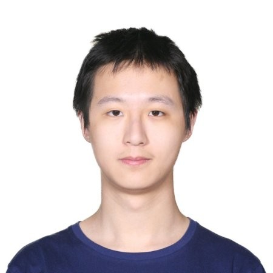

|
O-DRUM @ CVPR 2022Workshop on Open-Domain Retrieval Under Multi-Modal Settingsin conjunction with CVPR 2022, New Orleans, June 20Room 239, Ernest M Morial Convention Center |
Information Retrieval (IR) is an essential aspect of the internet era and improvements in IR algorithms directly lead to a better search experience for the end-user. IR also serves as a vital component in many natural language processing tasks such as open-domain question answering and knowledge and commonsense-based question answering, Recent advances in visual representation learning have also enabled image retrieval applications that have become a vital part of knowledge-based and commonsense visual question answering. Many datasets and IR algorithms have been developed to deal with input queries from a single modality, such as for document retrieval from text queries, image retrieval from text queries, text retrieval form video queries, etc. However, in many cases, the query may be multi-modal, for instance an image of a milkshake and a complementary textual description “restaurants near me” should return potential matches of nearby restaurants serving milkshakes. Similarly, sick patients may be able to input their signs and symptoms (for instance photographs of swelling and natural lanaguage descriptions of fever) in order to retrieve more information about their condition. Such functionality is desirable in situations where each modality communicates partial, yet vital information about the required output.
O-DRUM 2022 seeks to address this emerging topic area of research. The workshop aims to bring together researchers from information retrieval, natural language processing, computer vision, and knowledge representation and reasoning to address information retrieval with queries that may come from multiple modalities (such as text, images, videos, audio, etc.), or multiple formats (paragraphs, tables, charts, etc.).
Schedule
| 0800 - 0820 CDT | Welcome and Introductory Remarks | Man Luo / Tejas Gokhale | 0820 - 0855 CDT |
Danqi Chen
Princeton University |
Dr Chen is an Assistant professor of Computer Science at Princeton University and co-lead of the Princeton NLP Group. She is also part of the larger Princeton AIML group and affiliated with Princeton Center for Statistics and Machine Learning (CSML). Her broad interests are in in natural language processing and machine learning, and her research is mostly driven by two goals: (1) developing effective and fundamental methods for learning representations of language and knowledge, and their interplay, and (2) building practical systems including question answering, information extraction and conversational agents. | Learning Representations for Text Retrieval: What we Learned |
| 0855 - 0930 CDT |

|
Xin (Eric) Wang
University of California, Santa Cruz |
Dr. Wang is an Assistant Professor of Computer Science and Engineering at UC Santa Cruz. His research interests include Natural Language Processing, Computer Vision, and Machine Learning, with an emphasis on building embodied AI agents that can communicate with humans using natural language to perform real-world multimodal tasks. | (Multilingual) Fairness in Vision-and-Language Models |
| 0930 - 1030 CDT | Coffee Break and Poster Session | |||
| 1030 - 1105 CDT |  |
Hao Tan
Adobe Research |
Dr. Tan is a Research Scientist at Adobe Research. He completed his PhD in 2021 from the University of North Carolina, advised by Mohit Bansal. He is broadly interested in vision and language research. His PhD dissertation made significant contributions to assigning language meaning to visual concepts, including cross-modal representation learning, cross-modal retrieval, and visual/language grounding. |
From Neural Encoders to the Neural Retriever
Multimodal retrieval is about estimating relevance. Encoder-based method uses separate encoders and then calculates the relevance score based on vector similarity. It is efficient but shows a performance gap to the slower cross-modal approach, which explicitly models the multimodal interactions. In this talk, I will present the ways to enhance the retrieval model in the past (through knowledge distillation), for now (through implicit cross-modal modules), and in the future (rebuild the traditional retrieval pipeline with neural networks). |
| 1105 - 1140 CDT |

|
Diane Larlus
NAVER Labs Europe |
Dr Larlus is a Principal Research Scientist at Naver Labs Europe working on computer vision and machine learning, and a chair holder on Life-long representation learning within the MIAI AI research institute of Grenoble, working towards a semantic understanding of visual scenes. Her current interests are in lifelong learning, continual domain adaptation, and instance-level, semantic, and cross-modal visual search. |
Using Text in Computer Vision
Many computer vision tasks, including open-domain retrieval, become easier to tackle if some companion text is available, at train or at test time. In the first part of this talk, we will see how, using relatively small sets of captioned images, one can train effective visual representations from scratch. In a second part, we will consider several flavors of image retrieval, and discuss how each flavor can be tackled and even enhanced using textual information. |
| 1140 - 1215 CDT |

|
Aniruddha Kembhavi
Allen Institute for AI |
Dr. Kembhavi leads PRIOR, the computer vision team at the Allen Institute for AI. He is also an Affiliate Associate Professor at the Computer Science & Engineering department at the University of Washington. His research interests are in research problems at the intersection of vision, language, and embodiment. | Towards General Purpose Vision |
| 1215 -- 1300 CDT |
Spotlight Talks and Q&A:
|
Accepted Papers
The Proceedings are available via the CVF Open Access website . All workshop papers are also available below.-
Conditioned and composed image retrieval combining and partially fine-tuning CLIP-based features
Alberto Baldrati (Università degli Studi di Firenze); Marco Bertini (University of Florence)*; Tiberio Uricchio (University of Florence); Alberto Del Bimbo (University of Florence)
[poster] -
Cross Modal Retrieval with Querybank Normalisation
Simion-Vlad Bogolin (Institute of Mathematics of the Romanian Academy); Ioana Croitoru (Institute of Mathematics of the Romanian Academy)*; Hailin Jin (Adobe Research); Yang Liu (Peking University); Samuel Albanie (University of Cambridge)
[poster] -
Cross-modal Target Retrieval for Tracking by Natural Language
Yihao Li (University of Science and Technology of China)*; Jun Yu (University of Science and Technology of China); Zhongpeng Cai (University Of Science And Technology Of China); Yuwen Pan (University of Science and Technology of China)
[poster] -
Deep Image Retrieval is not Robust to Label Noise
Stanislav Dereka (Tinkoff)*; Ivan A Karpukhin (Tinkoff); Sergey Kolesnikov (Tinkoff)
[poster] -
Deep Normalized Cross-Modal Hashing with Bi-Direction Relation Reasoning
Changchang Sun (Illinois Institute of Technology)*; Hugo M Latapie (Cisco); Gaowen Liu (Cisco Research); Yan Yan (Illinois Institute of Technology)
[poster] -
Embedding Arithmetic of Multimodal Queries for Image Retrieval
Guillaume Couairon (Facebook AI Research)*; Matthijs Douze (Facebook AI Research); Matthieu Cord (Sorbonne University); Holger Schwenk (Facebook AI Research)
[poster] -
Good, Better, Best: Textual Distractors Generation for Multiple-Choice Visual Question Answering via Reinforcement Learning
Jiaying Lu (Emory Univesity)*; Xin Ye (Arizona State University); Yi Ren (Arizona State University); Yezhou Yang (Arizona State University)
[poster] -
How Do You Do It? Fine-Grained Action Understanding with Pseudo-Adverbs
Hazel Doughty (University of Amsterdam)*; Cees Snoek (University of Amsterdam)
[poster] -
Induce, Edit, Retrieve: Language Grounded Multimodal Schema for Instructional Video Retrieval
Yue Yang (University of Pennsylvania)*; Joongwon Kim (University of Pennsylvania); Artemis Panagopoulou (University of Pennsylvania ); Mark Yatskar (UPenn); Chris Callison-Burch (University of Pennsylvania)
[poster] -
Mind the Gap: Understanding the Modality Gap in Multi-modal Contrastive Representation Learning
Weixin Liang (Stanford University); Yuhui Zhang (Stanford University)*; Yongchan Kwon (Stanford University); Serena Yeung (Stanford University); James Zou (Stanford University)
[poster] -
Object Prior Embedded Network for Query-Agnostic Image Retrieval
Yikang Li (OPPO US Research Center)*; Jenhao Hsiao (OPPO US Research Center); Chiuman Ho (OPPO US R&D)
[poster] -
"This is my unicorn, Fluffy": Personalizing frozen vision-language representations
Niv Cohen (The Hebrew University of Jerusalem)*; Rinon Gal (Tel Aviv University); Eli Meirom (NVIDIA Research); Gal Chechik (NVIDIA); Yuval Atzmon (NVIDIA Research)
[poster] -
Weakly Supervised Temporal Sentence Grounding with Gaussian-based Contrastive Proposal Learning
Minghang Zheng (Peking University)*; Yanjie Huang (Beijing Institute of Technology); Qingchao Chen (Peking University); Yuxin Peng (Peking University); Yang Liu (Peking University)
[poster]
Call for Papers
We invite submissions related to the broad topic area of multi-modal retrieval, including but not limited to the following topic areas:
- Retrieval from multi-modal queries or retrieval of multi-modal information.
- New datasets or task design for open-domain retrieval from multi-modal queries, and multi-modal reasoning requiring external knowledge.
- Modification, augmentation of existing benchmarks such as OK-VQA, VisualNews, Web-QA, etc.
- Commentary and analysis on evaluation metrics in IR tasks, and proposals for new evaluation metrics.
- New methods and empirical results for multi-modal retrieval
- Faster, efficient, or scalable algorithms for retrieval.
- Methods which learn from web data and knowledge bases by retrieval, rather than from fixed sources.
- Retrieval methods aiding other tasks such as image and video captioning, visual grounding, VQA, image generation, graphics, etc.
- Use of Retrieval as a means for data augmentation/data generation in unsupervised/few-shot/zero-shot learning.
We encourage submissions of two types:
- Extended abstracts (4 pages + unlimited references).
- Long papers (maximum of 8 pages + unlimited references).
Submissions should be anonymized and formatted using the CVPR 2022 template. Accepted papers will be presented as posters during the workshop, where attendees, invited speakers and organizers can engage in discussion. We plan to highlight the best 3 papers via spotlight talks during the workshop session. We will give authors of all accepted papers an option to opt-in or opt-out of CVPR proceedings.
Important Dates:
| ♦ Submission Deadline: | April 08, 2022 (Friday), 23:59 PDT |
| ♦ Notification of Decision: | 2nd week of April |
| ♦ Camera Ready Deadline: | April 19, 2022 (Tuesday), 23:59 PDT |
| Submission website (CMT): | https://cmt3.research.microsoft.com/ODRUM2022 |
Organizers

Man Luo ASU |

Tejas Gokhale ASU |

Chitta Baral ASU |

Damien Teney Idiap |

Kenneth Marino Deepmind |
Pratyay Banerjee ASU |
|
Somak Aditya IIT Kharagpur |
Tianlu Wang Meta AI Research |

Yezhou Yang ASU |

Zhiyuan Fang ASU |

Zhe Gan Microsoft |
Please contact Man Luo (mluo26@asu.edu) or Tejas Gokhale (tgokhale@asu.edu) for additional details
The workshop is supported by NSF grant 2132724 as part of Research, Education, and Outreach activities.
Website maintained by Tejas Gokhale